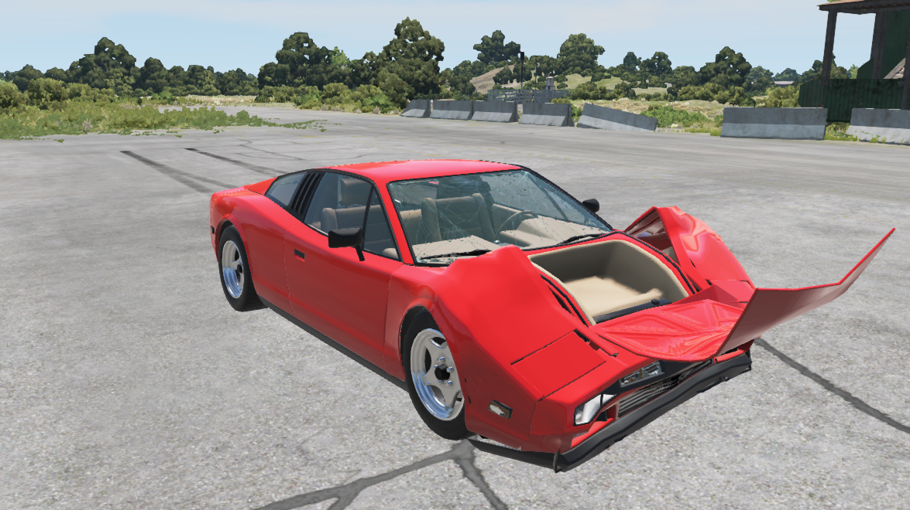

Blog One: BeamNG and the World of Crash Physics

I played many racing games in my life, and the one thing I like to do, besides racing the cpus in the game, is to crash into things for destruction. I remember playing the Need for Speed series the most ever since I was around seven years old (which was TWELVE YEARS AGO) and I liked crashing luxurious cars like Lamborghinis, Porsches, and even Bugatti's. However, when you compare the crash physics of many racing games to the real world, it looks like this:

Here is a Ferrari F40 after a 200mph head-on crash. (source: Forza Horizon 5)
Well, it's not that much, isn't it? First of all, It looks like someone crumpled a piece of paper that matches the color of the car, then they slapped it on the body. Second, although there is cracked glass, it's just textured to look cracked, whith no bits of glass broken away. The only parts of the car that are gone are the mirrors, and nothing else.
Even if the graphics are stunning and the gameplay is fun an engaging, Crash physics are not that impressive when it comes to many racing games, both arcade racers (not as realistic) and racing sims (realistic with handling). The big reason for this minimal amount of damage is to protect real car brands featured in those games from what their cars can handle from actual crashes, but it really breaks the immersion of what cars can handle from real-world situations. This is where BeamNG.drive comes in.
Here is a fictional car, that resembles an F40, after a head-on crash at... 40mph. (source: BeamNG.Drive)
That looks so much better, does it? This simulates a crashed car pretty well, with the front of the car completely crumpled in, the front windshield cracked and deformed, and the fenders are bowed out and the front bumper caved in. Even with this impressive amount of damage, what even is this game exactly?
BeamNG.drive is an open world vehicle sim produced by BeamNG GmbH, based in Bremen, Germany. The game uses soft-body physics to realistically simulate handling, and even damage, to automobiles. It was officially released as early access in 2015, and has been updated with many improvements and features added ever since. I discovered this game from YouTube videos, where they showcased mods for BeamNG (yes, you can install various mods in this game) and I was quite impressed on how much damage you can do with the vehicles. Parts are easily detached, wheels are popped, and bodies are deformed and flattened to ridiculous levels. Besides body damage, the function of the car is affected heavily, with the wheels not functioning after the axles are broken, radiators breaking causing the car to overheat, and the possiblilty of destroying the engine, rendering the vehicle dead. Since it uses 3D models of cars with individual beams and nodes to simulate how the shape of the car is affected when colliding with another object, this game requires quite a bit of power from both the CPU and GPU.